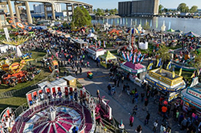

There is plenty to do in New York's 2nd largest city. Check out some of the local
favorites listed below to plan your extended trip while attending the conference!
Niagara
Falls. Just a 20
minute drive from the convention center. There are many activities to do within the Falls. Take
a boat tour to get up close to the falls in their natural beauty.

Buffalo Canalside. A local favorite and
you'll like it too. Food, Outdoors, Entertainment, and you name it. Relax by the water or enjoy
the nightlife. This is a must see spot while you're in town. The Buffalo Naval & Military Park
is right next door as well to enjoy if you stop at this locale.